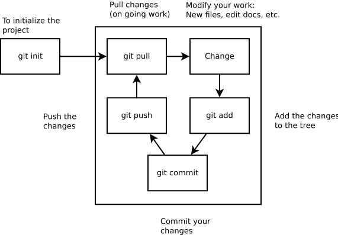
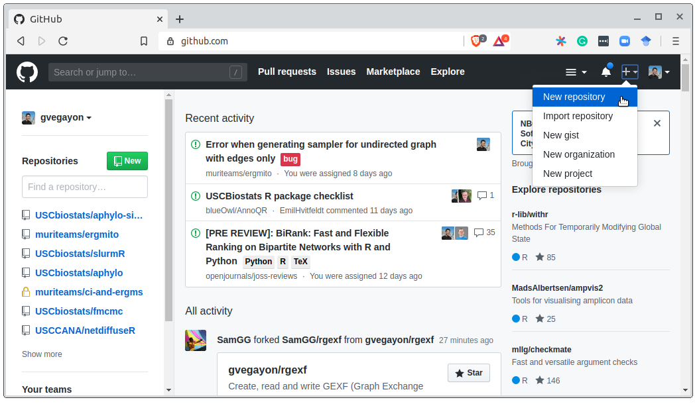
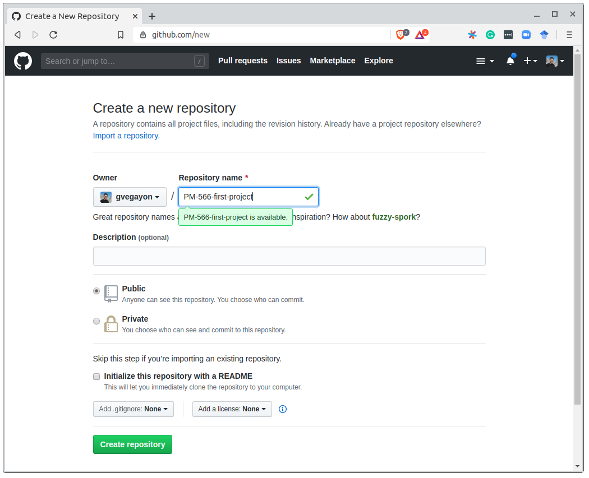

Version control and reproducible research
PHS 7045: Advanced Programming
Preamble
Welcome to “PHS 7045: Advanced Programming”
Before we start with the class:
- Who are you, and what do you expect to get from the class?
- Who am I, and what do I expect to get from you?
Workflow:
All submissions (labs, assignments, midterm, and final) through GitHub.
Submissions must be using quarto, Rmarkdown, or similar (like this presentation!).
Weekly readings.
Two weekly sessions: Lecture + Lab.
One big project to be completed: Midterm and Final.
- More details on the syllabus.
Today’s lesson
We will learn about version control and GitHub.
Set up git and GitHub (make sure it works).
Part I: intro
Brief review of technologies
Throughout the course, we will be using the following tools:
- R (duh!)
- Some R GUI, e.g., RStudio or Visual Studio Code.
- GitHub co-pilot: An AI-powered pair programmer (when OK; more on this later).
What is ‘version control.’
[I]s the management of changes to documents […] Changes are usually identified by a number or letter code, termed the “revision number”, “revision level”, or simply “revision”. For example, an initial set of files is “revision 1”. When the first change is made, the resulting set is “revision 2”, and so on. Each revision is associated with a timestamp and the person making the change. Revisions can be compared, restored, and with some types of files, merged. – Wiki

Why do we care
You might have seen this…
mydocument.txt
mydocumentversion2.txt
mydocumentwithrevision.txt
mydocumentfinal.txtOr even this…
mydocument2016-01-06.txt
mydocument2016-01-08.txtWhy do we care
Have you ever:
- Made a change to code, realised it was a mistake and wanted to revert back?
- Lost code or had a backup that was too old?
- Had to maintain multiple versions of a product?
- Wanted to see the difference between two (or more) versions of your code?
- Wanted to prove that a particular change broke or fixed a piece of code?
- Wanted to review the history of some code?
Why do we care (cont’d)
- Wanted to submit a change to someone else’s code?
- Wanted to share your code, or let other people work on your code?
- Wanted to see how much work is being done, where, when, and by whom?
- Wanted to experiment with a new feature without interfering with working code?
In these cases, and no doubt others, a version control system should make your life easier.
– Stackoverflow (by si618)
A (Very) Short History of Git
- 1991–2002: Linux kernel developed via emailed patches, no formal version control
From: torvalds@klaava.Helsinki.FI (Linus Benedict Torvalds)
Newsgroups: comp.os.minix
Subject: What would you like to see most in minix?
Summary: small poll for my new operating system
Date: 25 Aug 91 20:57:08 GMT
Organization: University of Helsinki
Hello everybody out there using minix -
I'm doing a (free) operating system (just a hobby, won't be big and
professional like gnu) for 386(486) AT clones. This has been brewing
since april, and is starting to get ready. I'd like any feedback on
things people like/dislike in minix, as my OS resembles it somewhat
(same physical layout of the file-system (due to practical reasons)
among other things).
I've currently ported bash(1.08) and gcc(1.40), and things seem to work.
This implies that I'll get something practical within a few months, and
I'd like to know what features most people would want. Any suggestions
are welcome, but I won't promise I'll implement them :-)
Linus (torvalds@kruuna.helsinki.fi)
PS. Yes - it's free of any minix code, and it has a multi-threaded fs.
It is NOT protable (uses 386 task switching etc), and it probably never
will support anything other than AT-harddisks, as that's all I have :-(.A (Very) Short History of Git (cont’d)
- 2002: Kernel team adopts BitKeeper, a proprietary DVCS, free to use for open source projects
- April 2005: Free license revoked after a licensing dispute
- April 2005: Torvalds writes Git from scratch in ~two weeks
- July 2005: Torvalds hands maintenance to Junio Hamano, who still leads Git development today
- 2008 onward: GitHub launches, making distributed workflows (fork/branch/PR) mainstream far beyond kernel hacking
Git: The stupid content tracker
During this class (and perhaps, the entire program,) we will be using 
- Git is used by most developers in the world.
- A great reference about the tool can be found here
- More on what’s stupid about Git here.
How can I use Git
There are several ways to include Git in your work pipeline. A few are:
Through the command line
Through one of the available Git GUIs:
More alternatives here.
A Common workflow

Git has a ton of features, but the daily workflow only features a handful of commands: git pull, git add, git commit, and git push:
A Common workflow
- Start the session by pulling (possible) updates:
git pull
Make changes
(optional) Add untracked/new files:
git add [target file](optional) Stage modified files:
git add [target file](optional) Revert changes:
git checkout [target file]
- Move changes to the staging area (optional):
git add
Commit:
If nothing pending:
git commit -m "Your comments go here."If modifications are not staged:
git commit -a -m "Your comments go here."
- Upload the commit to the remote repo:
git push.
Part 2: Hands-on local git repo
Hands-on 0: Introduce yourself
Set up your git install with git config, start by telling who you are
$ git config --global user.name "Juan Perez"
$ git config --global user.email "jperez@treschanchitos.edu"Try it yourself (5 minutes) (more on how to configure git here)
Hands-on 1: Local repository
We will start by working on our very first project. To do so, you are required to start using Git and GitHub so you can share your code with your team. For now, you can keep things local and skip Github. For this exercise, you need to
- Create a new folder with the name of your project (you can try
PHS7045-first-project)
- Initialize git with
git initcommand.
- Create a
README.mdfile and write a brief description of your project.
- Add the file to the tree using the
git addcommand, and check the status.
Make the first commit using the
git commitcommand adding a message, e.g.$ git commit -m "My first commit ever!"And use
git logto see the history.
Note 1: We are assuming that you already installed git in your system.
Note 2: Need a text editor? Check out this website link.
Hands-on 1: Local repository (solution)
The following code is fully executable (copy-pastable)
# (a) Creating the folder for the project (and getting in there)
mkdir ~/PHS7045-first-project
cd ~/PHS7045-first-project
# (b) Initializing git, creating a file, and adding the file
git init
# (c) Creating the Readme file
echo An empty line > README.md
# (d) Adding the file to the tree
git add README.md
git status
# (e) Committing and check out the history
git commit -m "My first commit ever!"
git logHands-on 1: Local repository
Ups! It seems that I added the wrong file to the tree, you can remove files from the tree using git rm --cached, for example, imagine that you added the file class-notes.docx (which you are not supposed to track), then you can remove it using
$ git rm --cached class-notes.docxThis will remove the file from the tree but not from your computer. You can go further and ask git to avoid adding Docx files using the .gitignore file
Part 3: Hands-on cloud
Hands-on 2: Remote repository
Now that you have something to share, your teammates are asking you to share the code with them. Since you are smart, you know you can do this using something like Gitlab or Github. So you now need to:
Create an online repository (empty) for your project using Github.
Add the remote using
git remote add, in particular
$ git remote add origin https://github.com/[your user name]/PHS7045-first-project.gitThen, use the commands git status and git remote -v to see what’s going on.
- Push the changes to the remote using
git pushlike this:
$ git push -u origin masterYou should also check the status of the project using git status to see what Git tells you about it. Origin is the tag associated with the remote repo setup, while ‘master’ is the tag associated with the current branch of your repo.
Recommended: Complete GitHub’s Training team “Uploading your project to GitHub”
Hands-on 2: Remote repository (solutions a)

Hands-on 2: Remote repository (solutions a)

Hands-on 2: Remote repository (solutions b)
For part (b), there are a couple of solutions, first, you could try using your ssh-key (if you set it up)
# (b)
git remote add origin git@github.com:gvegayon/PHS7045-first-project.git
git remote -v
git statusOtherwise, you can use the simple URL (this will prompt user+password) every time you want to push (and pull, if private).
# (b)
git remote add origin https://github.com/gvegayon/PHS7045-first-project.git
git remote -v
git statusHands-on 2: Remote repository (solutions c)
For the first git push, you need to specify the source (master) and target (origin) and set the upstream (the -u option):
# (c)
git push -u origin master
git statusThe --set-upstream, which was invoked with -u, will set the tracking reference for pull and push.
Example for .gitignore
Example extracted directly from Pro-Git (link).
# ignore all .a files *.a # but do track lib.a, even though you're ignoring .a files above !lib.a # only ignore the TODO file in the current directory, not subdir/TODO /TODO # ignore all files in any directory named build build/ # ignore doc/notes.txt, but not doc/server/arch.txt doc/*.txt # ignore all .pdf files in the doc/ directory and any of its subdirectories doc/**/*.pdf
Resources
Git’s everyday commands, type
man giteverydayin your terminal/command line. and the very nice cheatsheet.My personal choice for nightstand book: The Pro-git book (free online) (link)
Github’s website of resources (link)
The “Happy Git with R” book (link)
Roger Peng’s Mastering Software Development Book Section 3.9 Version control and Github (link)
Git exercises by Wojciech Frącz and Jacek Dajda (link)
Checkout GitHub’s Training YouTube Channel (link)